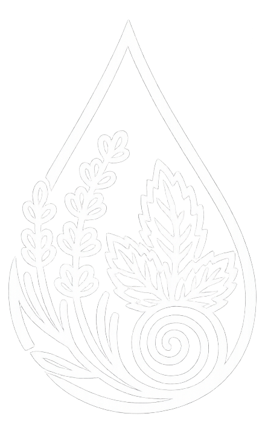
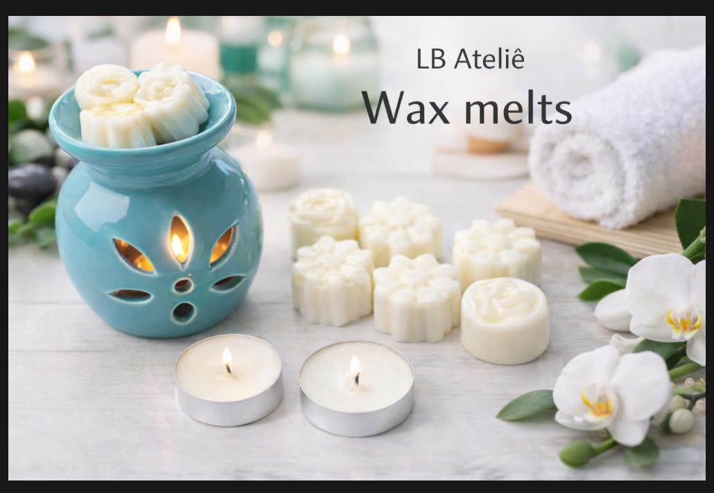
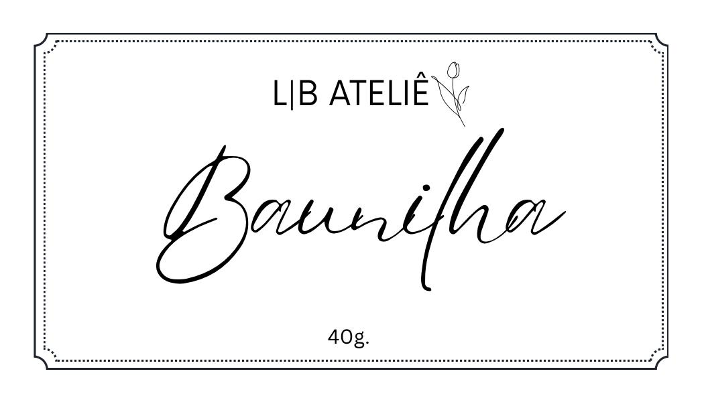
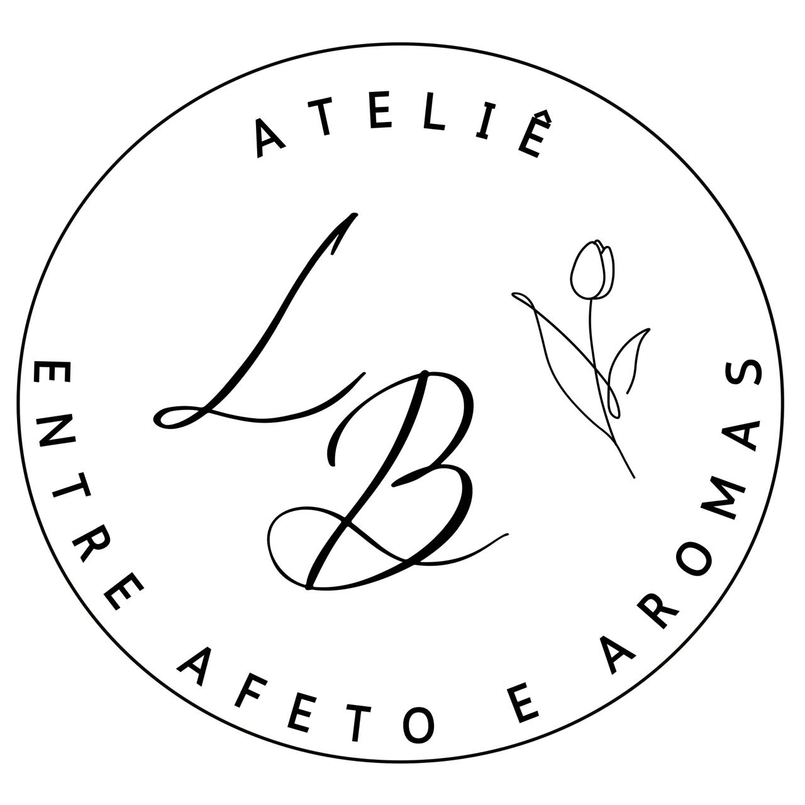

Entre afetos e aromas
Velas aromáticas artesanais criadas para iluminar momentos e perfumar ambientes com elegância.
Falar no WhatsAppA L&B Aromas nasceu de um sonho compartilhado entre mãe e filha. Após anos vivendo uma rotina intensa e cheia de responsabilidades, surgiu o desejo de desacelerar e buscar uma vida com mais equilíbrio, significado e bem-estar.
O que começou como um hobby logo se transformou em algo especial: a criação de velas aromáticas artesanais feitas com carinho, dedicação e atenção a cada detalhe.

Cada vela é produzida manualmente em nosso ateliê, levando para os ambientes uma atmosfera de conforto, aconchego e sofisticação.

